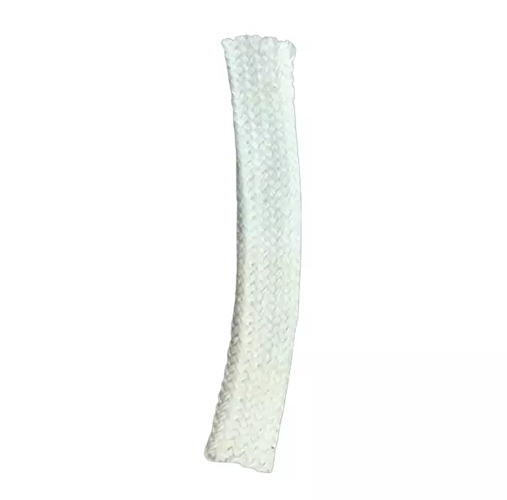

Вернуться назад
 8 (926) 874 - 74 - 99
8 (926) 874 - 74 - 99

Фитиль к гигрометрам ВИТ-1 и ВИТ-2 (упаковка 10 шт.)
Специализированный тканевый фитиль (питатель) для увлажнения «смоченного» термометра. Необходим для корректной работы гигрометров и точного измерения влажности воздуха.
артикул: 00088 (926) 874 - 74 - 99
Параметры
Количество в упаковке: 10 шт.
Материал: Хлопок 100% (ГОСТ)
Совместимость: ВИТ-1, ВИТ-2, ВИТ-3
Длина: Стандарт (под размер питателя)
Заказать
Описание товара
Зачем нужны сменные фитили для гигрометров:
- Точность показаний. Со временем фитиль забивается солями из воды и пылью, теряет эластичность и перестает правильно испарять влагу. Своевременная замена гарантирует отсутствие погрешностей.
- Правильный материал. Наши фитили изготовлены из чистого хлопка с особой структурой плетения, что обеспечивает быстрый подъем воды к резервуару термометра.
- Экономия времени. Вам не нужно ничего вырезать и подшивать вручную — фитили уже нарезаны в нужный размер и готовы к установке.
- Требование инструкций. Согласно регламенту эксплуатации гигрометров ВИТ, фитиль необходимо содержать в чистоте и регулярно менять для прохождения метрологического контроля.
- Удобная фасовка. Одной упаковки из 10 штук хватит на длительный период обслуживания целого парка приборов на складе или в аптеке.
- Универсальность. Идеально подходят как для клинских приборов, так и для гигрометров «Спецзащита» или «Стеклоприбор».